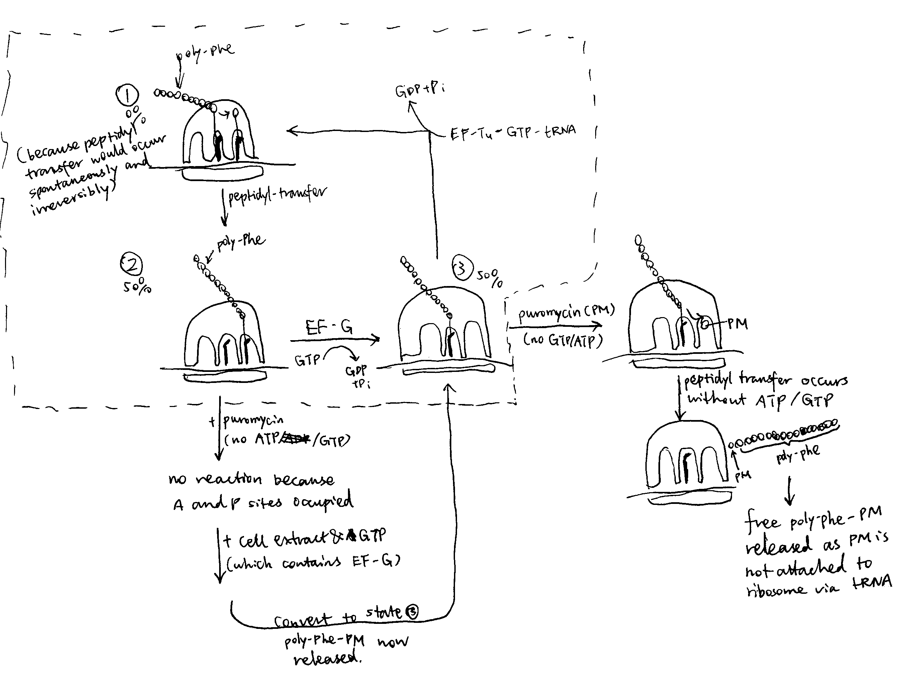
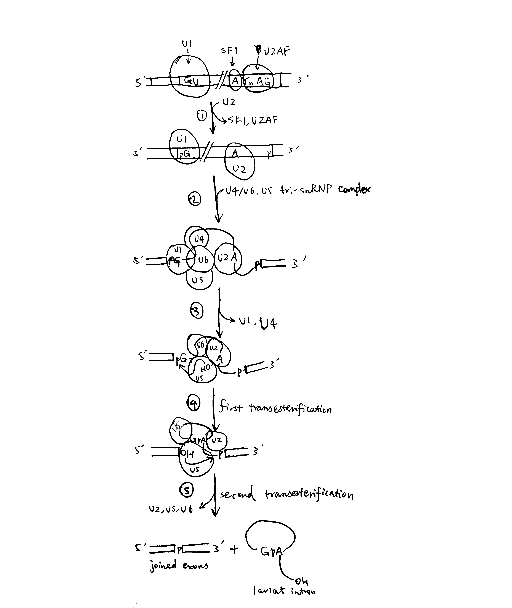
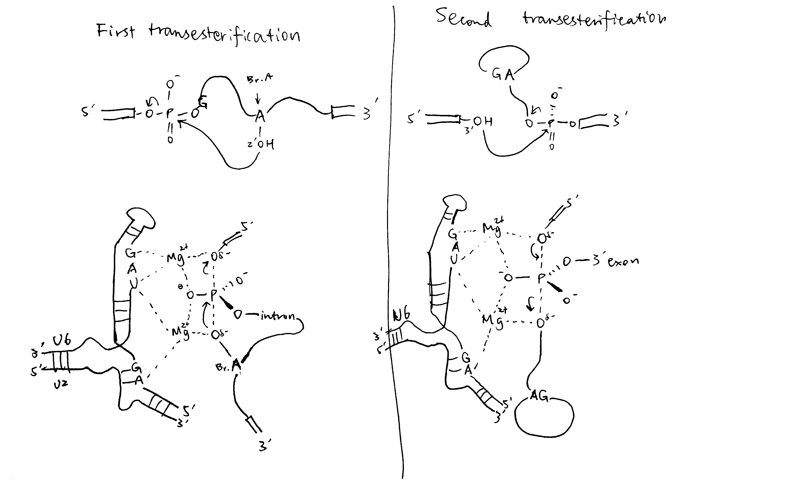

2019
Explain how antibiotics and genetic mutations have helped in our understanding of the mechanism of protein synthesis on the ribosome.
Explain how antibiotics and genetic mutations have helped in our understanding of the mechanism of protein synthesis on the ribosome.
Introduction
Protein synthesis occurs in ribosomes and involves 3 phases: initiation, elongation (which is subdivided into 4 steps) and termination. Each phase depends on the correct conformation and/or catalytic activity of different domains of the ribosomal complex and soluble protein factors (IFs, EFs and RFs). The identities and mechanisms of these critical RNA/protein domains (in bacterial cells) can be investigated by genetic mutation and antibiotics, which hinder their normal functions, along with recent advances in biophysical methods, which allows high resolution structures to be determined for ribosomes in different contexts.
Background information
The Ribosome
The bacterial 70S ribosome comprises two subunits, the 50S (large) and the 30S (small) subunit. The 30S subunit mediates selection of cognate aminoacyl tRNAs and the 50S subunit contains the peptidyl-transferase centre (PTC), which catalyses addition of new amino acids to the elongating polypeptide chain.
The process of protein synthesis
The 3 phases of protein synthesis are initiation, elongation and termination.
During initiation, the 3’ end of the 16S rRNA of the 30S subunit base-pairs with the Shine-Dalgarno sequence, which positions the start codon (usually AUG) in the P site for the binding of the initiator tRNA (usually fMet-tRNA) and IF1, 2, 3. Joining of the 50S subunit and dissociations of IFs primes the elongation phase.
The elongation phase, where new amino acids are appended to the growing polypeptide, involves 4 steps:
- Decoding. An aminoacylated tRNA (aa-tRNA) is delivered to the A-site of the ribosome by elongation factor EF-Tu complexed with GTP. GTP hydrolysis facilitates discrimination between cognate and non-cognate tRNAs.
- Peptidyl transfer. The peptidyl-transferase centre (PTC) on the 50S subunit catalyses the formation of peptide bond between the amino acids attached to the tRNAs in the A- and P-sites by transferring the polypeptide chain from the P-site tRNA to the aa-tRNA in the A-site.
- Translocation. EF-G catalyses the movement tRNAs from the A and P sites to the P and E sites
- the growing polypeptide chain passes through an exit tunnel
Finally, when the stop codon (UAA/UAG/UGA) is encountered, it is recognised by release factors (RF1/RF2) that forces hydrolysis of the peptidyl-tRNA bond in the P-site, thus releasing the polypeptide chain from the ribosome.
Mutations
Mutation in different components of protein synthesis (tRNA, ribosomal proteins, rRNAs) can all lead to decreased fidelity of this process.
The tRNA needs to undergo a structual transition that involves a 30\(^\circ\) bend in order to achieve the A/T (decoding) conformation. Mutagenesis studies showed that two mutations in the D-stem, A9C and G24A, promote miscoding and these two bases are critical for distortion of the cognate tRNA that is required for decoding.
Mutagenesis studies also help to identify ribosomal proteins that are critical in the decoding process. The mutations can be classified into two types according to their implication on the speed and accuracy/robustness of translation: ram (ribosome ambiguity) mutations improve speed but has a higher frequency of failure in rejecting non-cognate tRNAs; in contrast, ribosomes with str (stringency) mutations are slower and more accurate, but they reject some cognate aa-tRNAs and thus waste GTP. Most of such mutations are found in the ribosomal proteins S12, S5 and S4, which are close to the decoding site, and these proteins have an important effect on codon/anticodon interactions.
Antibiotics
The antibiotic puromycin can be used to demonstrate the existence of A and P sites in the ribosome and the ATP/GTP-independent nature of the peptidyl transfer reaction.
Puromycin (PM) is an aa-tRNA analogue which is composed of an nucleoside and an bound amino acid. Unlike the normal aa-tRNA where the 5’ OH of the nucleoside (adenosine) is linked to the rest of the tRNA, PM has a free 5’ OH. Therefore, PM can fit into the peptidyl transfer centre (PTC) and accept the polypeptide chain in the peptidyl tranfer reaction, but the new peptide with PM attached is released immediately because PM does not have an attached tRNA to anchor it to the ribosome.
The details of the experiment is shown below and in Figure 1:
- Take a cell free system containing: ribosomes, Mg2+-containing buffer, poly-U mRNA, 14C-Phe-tRNA, ATP/GTP-regenerating system and add varying concentrations of soluble cell extract.
- This yields ribosomes carrying polyPhe-tRNA (not free polyPhe or poly-Phe-tRNA unbound to ribosomes). [with prior knowledge, this is because there are no stop codons on the mRNA and hence RFs are not recruited to terminate translation]
- the ribosomes are washed to remove soluble proteins and ATP/GTP.
- then they are incubated with puromycin (PM)
- about 50% of the ribosomes release 14 labelled polyPhe as polyPhe-PM [As shown in Figure 1, the convertion from state 2 to 3 and from state 3 to 1 requires GTP, and the convertion from state 1 to 2 (peptidyl transfer) does not. Therefore, when GTP is removed, protein synthesis is either trapped in state 2 or 3]
- without a tRNA, PM cannot bind to the ribosome (at A/P sites) so the compound with polyPhe is released
Conclusion: ribosome itself catalyses the formation of the peptide bond without energy supplying molecules (ATP/GTP).
- now wash the ribosomes to remove the PM
- add soluble cell extract and GTP, then more PM
- the remaining 50% ribosomes release polyPhe-PM
Conclusion:
- ribosomes have a ‘PM-reactive’ site (P site) and a ‘PM-unreactive site’ (A site)
- soluble cell extract can translocate from RM-unreactive to PM-reactive site (driven by EF-G)

Figure 1: The puromycin experiment.
Summary
Mutagenesis and ribosome-targeting antibiotics are valuable tools for studying the mechanisms of protein synthesis in the ribosome. These methods are usually aided by cryo-EM and X-ray crystallography to probe into the 3D molecular details.
Mutations in tRNA, rRNA and associated proteins give information on their specific roles and behaviours during protein synthesis. Antibiotics with various (and usually predictable) chemical properties is another way of studying the mechanisms of protein synthesis. Apart from the puromycin (which targets the peptidyl transfer centre) mentioned in this essay, there is a wide range of antibiotics that target different steps of protein synthesis. For example, streptomycins interferes with the delivery of tRNAs to the A-site and neomycin hinders translocation following peptidyl transfer. High resolution crystal structures were obtained for many of these antibiotics in complex with the ribosome (or part of ribosome). These structures are indicative of functionally important sites in the ribosome and they often shed light on the mechanisms.
What are the roles of small nuclear RNAs (SnRNAs) in pre-mRNA splicing and what are the mechanisms that control alternative splicing?


Overview
RNA splicing by spliceosomes removes introns from nascent pre-mRNA and joins protein-coding exon sequences, which matures the mRNA and makes it ready for translation. By chosing variable splice sites, different mature mRNAs (and hence proteins) can be produced from the same pre-mRNA.
Structure of the Intron
Splice sites (i.e. exon-intron junctions) have conserved features. As shown in Figure 1, most introns have an invariant GU at the 5’ end (5’ splice site) and AG at the 3’ end (3’ splice site), their flanking sequences are variable but the bases are found at frequencies higher than expected based on a random distribution. The branch point A is also invariant, and most introns also have a polypyrimidine tract between the branch point and the 3’ splice site. These ‘standard’ pre-mRNAs are spliced by snRNPs U1, U2, U4, U5, and U6. A small fraction of pre-mRNA does not follow the ‘GU-AG’ rule and have 5’-AU and AC-3’ instead, which are spliced by four low-abundance snRNPs together with U5.
Figure 1: The structure of a typical intron
Spliceosome Assembly and the Splicing Process
The spliceosome is a large and dynamic RNP machine whose size is comparable to a ribosome. The 5 snRNPs that constitute the spliceosome are U1, U2, U4, U5, and U6, each of which is a association of an snRNA with proteins. The key catalytic activity is attributed to RNA, so the spliceosome is an ribozyme. A spliceosome is assembled whenever an intron is to be removed and its components are recycled after splicing. The series of events are shown in Figure 2.

Figure 2: Spliceosome assembly and the splicing process
- U1 base-pairs with the 5’ splice site; SF1 (splicing factor 1) binds to the branch-point A; U2AF (U2 auxilliary factor) associates with the polypyrimidine tract and 3’ splice site. Then, U2 replaces SF1 and U2AF.
- The U4/U6.U5 tri-snRNP complex joins, forming the spliceosome
- Rearrangement of base-paring interactions leads to the catalytically active conformation. U6 dissociates from U4 and replaces U1. U4 is also released.
- The catalytic core of U6/U2 catalyses the first transesterification reaction (ligating 5’ guanosine to the 2’ OH of the branch point adenosine)
- Further rearrangements take place, and the second transesterification reaction occurs (joining the two exons)
The two sequential transesterification reactions per se do not require energy input, as there is no net bond breaking (two phosphodiester bonds are hydrolysed and another two are formed), but ATP/GTP hydrolysis is used to drive structural transitions and as a ‘proofreading’ mechanism.
As shown in Figure 3, In the catalitically active state, U6 partially base-pairs with U2 and U6 forms an internal stem loop structure with three nucleotides coordinated to two Mg2+ ions. Mg2+ ions stabilise the transitions states of the two transesterification reactions and thus achieve catalysis. The key bases coordinated to Mg2+ are confirmed by substitution of oxygen for sulfur atoms at various locations.

Figure 3: The transesterification reactions in detail
Alternative Splicing
pre-mRNAs contain cis-acting regulatory sequences (either splicing enhancers or silencers) to which splicing factors can bind and thus regulate splicing (Figure 4). RNA-RNA base pairing, which can occur either in cis or trans, can also specify splice site use.
RNA-binding proteins/RNPs that regulate splicing can be classified into 3 classes: the classical hnRNPs, serine-arginine repeat (SR) proteins, and tissue-specific RNA-binding proteins. Generally, hnRNPs inhibit splicing from nearby splice sites by interacting with splicing silencers while SR proteins promotes splicing by binding to enhancers.
Figure 4: Splicing control by cis-regulatory sequences. ISE/ESE, intronic/exonic splicing enhancers; ISS/ESS, intronic/exonic splicing silencers.
RNA-RNA recognition can also control splice site choice, as exemplified by the exon 6 cluster of the Drosophila DSCAM gene, as shown in Figure 5.
Figure 5: hrp36 binds to all axon6 variants and represses their inclusion in the mature mRNA. When the cis-acting RNA selector sequence upstream of a specific exon (in this case 6.6) pairs with the docking site, it results in activation of the exon immediately downstream.